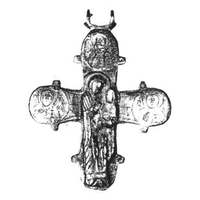

Catalog › CE-1005 · KOR2003-III.1.1.31
Valvă de revers de cruce-encolpion cu capete rotunjite, Odighitria în relief înalt, trei sfinți în niello
sec. XII (1101–1200) · Pekari (Kniaja Gora), regiunea Cerkasî (raionul Kaniv), Ucraina · Muzeul Național de Istorie al Ucrainei, Kiev, inv. № В-890
single valve of a reliquary cross, aramă; c. XII (1101–1200); found at Pekari (Kniaja Gora), regiunea Cerkasî (raionul Kaniv), Ucraina; kept at Muzeul Național de Istorie al Ucrainei, Kiev.


Identificare
- Categorie
- Valvă izolată
- Material
- Aramă
- Tehnică
- Turnare în relief; Gravare (incizie); Niello
- Dimensiuni
- Î 79 × L 68 × Gr 5 mm
Iconografie
- Revers
- Maica Domnului cu Pruncul; Neidentificat
- Descriere revers
- Valvă de revers a unei cruci-encolpion cu capete rotunjite. Partea interioară are o adâncitură nesemnificativă care repetă imaginea reliefată exterioară. În centru, în relief înalt, Maica Domnului Odighitria și trei imagini în niello, până la piept, ale sfinților în medalioane, la capete; imaginile reliefate și cele în niello sunt completate cu gravură. Pe margine ornament: contururile crucii sunt subliniate cu o linie adâncită și sunt făcute crestături.
- Inscripții
- IC [X]C/МР ΘҮ; П[В] ЛО; ПТ РО; НН Л[Ъ]
- Limba
- Slavonă
Datare și atribuire
- Datare
- sec. XII (1101–1200)
- Centru
- Necunoscut
- Tipologie
- Korzukhina–Peskova 2003, tip III 1 1
Descoperire
- Localitate
- Pekari (Kniaja Gora)
- Regiune
- regiunea Cerkasî (raionul Kaniv)
- Țară
- Ucraina
- Context
- Fortificație
Păstrare și referințe
- Colecție
- Muzeul Național de Istorie al Ucrainei, Kiev
- Nr. inventar
- № В-890
- Bibliografie
- G. F. Korzukhina, A. A. Peskova, Древнерусские энколпионы. Нагрудные кресты-реликварии XI–XIII вв., Sankt-Petersburg, 2003 [Korzukhina–Peskova 2003], p. 105, cat. nr. III 1 1/31, reprodusă la Табл. 53 (planșe, p. 295). Bibliografie citată în sursă: Леопардов 1890, I, табл. I, 11; Корзухина, архив ф. 77, д. 15, л. 43.
- Figura
- Табл. 53
- Planșe
- Korzukhina–Peskova 2003, Табл. 53 (planșă fără paginație proprie în PDF; p. 295 tipărită)
- Observații
- Datare după Peskova: sec. XII. Circumstanțe: Descoperire de la sfârșitul sec. XIX (înainte de 1890). Proveniență în colecție: din colecția N. A. Leopardov. Inscripții adâncite de ambele părți ale Maicii Domnului Odighitria, pe două rânduri: IC [X]C/МР ΘҮ; în medalioane inscripții mici: stânga П[В] ЛО, dreapta ПТ РО, sus НН Л[Ъ]. Credit: L. V. Strokova. Inscripții mixte: formule grecești și nume slavone, unele stilizate sau stricate. Coordonate: nu sunt date în sursă.
Citare: Corpus Encolpiorum, CE-1005, Valvă de revers de cruce-encolpion cu capete rotunjite, Odighitria în relief înalt, trei sfinți în niello, https://vitaliejosanu1979-ux.github.io/primul-meu-proiect/piese/KOR2003-III.1.1.31/ (accesat 2026-10-17).